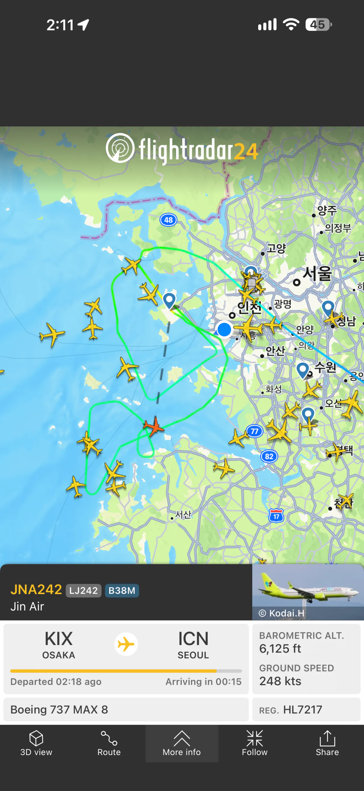
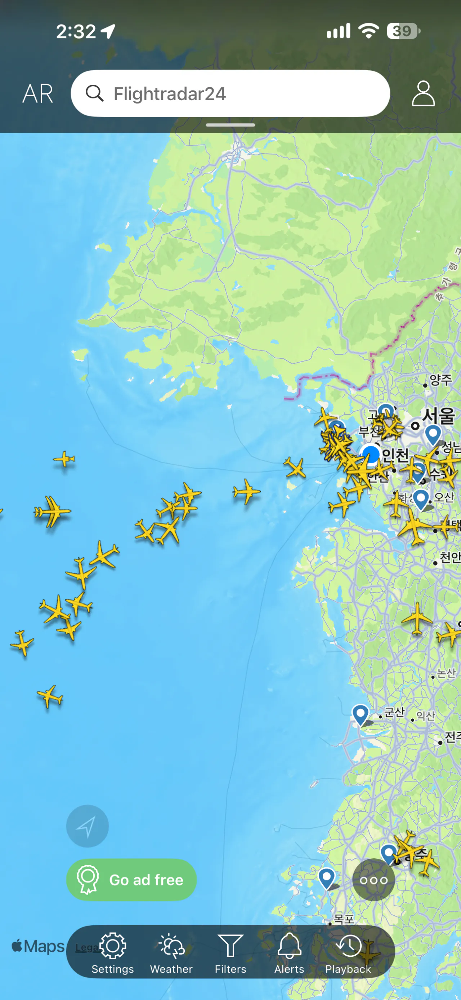

지금 수도권 바람이 미친듯이 불어서 인천행 항공기는 인천앞바다에서 빙글빙글 돌고있고
활주로가 적은 김포행 항공기들은 아예 포기하고 아랫동네(청주,대구,김해)로 회항하는중


지금 수도권 바람이 미친듯이 불어서 인천행 항공기는 인천앞바다에서 빙글빙글 돌고있고
활주로가 적은 김포행 항공기들은 아예 포기하고 아랫동네(청주,대구,김해)로 회항하는중
윈드시어! 윈드시어!
설마 새벽2시꺼 지금 퍼온건가
지금은 괜찮아진거 같은데 이착륙 잘만함
https://www.fmkorea.com/10458843645
14시 40분 글인데?
그럼 1시간전인가 봄
지금 경기도 지나가는 비구름 때문인가보네
비행기 착륙시간이 00:15인걸 보니 새벽 정보가 맞는듯
바람 쎄다고 생각했는데 저정도였구나
어쩐지 김포공항으로 내려가는 비행기가 중간에 다시 올라가더라니 ㅋㅋ
비바람에 낙엽콤보로 배수로 막혀서 차들 다 수륙양용
지금 제주에서 김포가는 비행긴데 착륙할 수 있을것인가..
어라 지금은 좀 잠잠한데 하늘위는 난리인가. 이럼 안되는데;;
비 조오오오오온나 많이 옴ㅋㅋㅋ